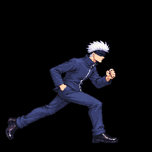
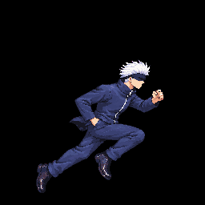
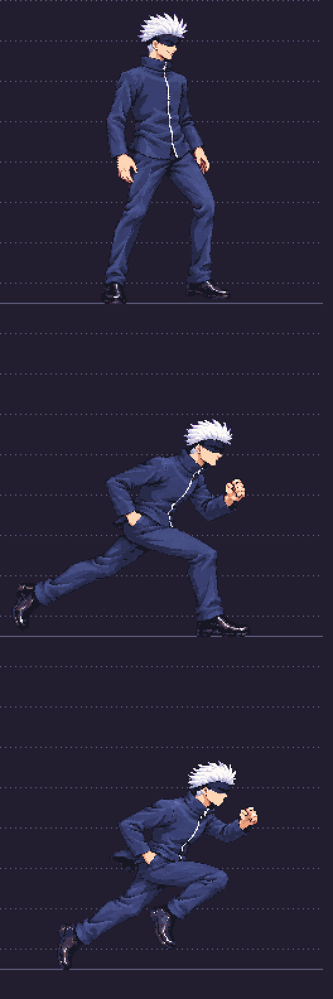

Gojo dash and superDash size review
User approved via Claude relay gojo-run #11: “Approve both (Recommended).” Dash v11 and superDash v13 are approved as drawn despite the technical size holds below. The corrected candidate atlas is packed in this branch; Claude still owns contact review and integration before merge. Exact receipt: user decision. No production merge or deploy is implied.
Compare each pair at native 256×256 cell density. Each comparison image loops two frames at the source durations. Every slot is displayed at 256×256 CSS pixels and uses the same cell floorline y=240; swipe horizontally on a narrow screen.
Approved idle anchor · v08 f0
One 256×256 cell at native packed density.
Approved title-style combat anchor

Reference cell at native 256×256 density.
Dash · approved v11 vs prior v10

| Frame | Head | Feet | B |
|---|---|---|---|
| f0 | .995 | 1.091 | .957 |
| f1 | .971 | 1.094 | .929 |
SuperDash · approved v13 vs prior v12

| Frame | Head | Feet | B |
|---|---|---|---|
| f0 | 1.003 | .985 | .903 |
| f1 | 1.019 | .953 | .906 |
Shared targets and findings
| Measure | Target | Candidate result | Finding |
|---|---|---|---|
| Head probe, each frame | .97–1.03 | Dash .995/.971; SuperDash 1.003/1.019 | Pass |
| Feet proxy, each frame | .94–1.06 | Dash 1.091/1.094; SuperDash .985/.953 | Dash fails |
| Body B, each frame | .93–1.07 | Dash .957/.929; SuperDash .903/.906 | Dash f1 .001 below floor; SuperDash both fail |
| Dash vs SuperDash B | within .05 per frame | f0 delta .054; f1 delta .023 | f0 fails; no median substitution |
| Auto-head correction | .93–1.07 | Dash 1.0; SuperDash 1.1455 | SuperDash fails |
| Visible segments | within ±6% of idle/combat | Several projected segments are occluded or uncertain beyond this range | Unmeasured; user approved despite uncertainty |
B is the square-root garment-area ratio. Feet is a matching-color area proxy, not shoe length. Dash f1 B=.929 is outside .93; report precision is 0.001, but it is not rounded into a pass. See the full per-frame, uncertainty, segment, clipping, and atlas-hash record in Astra audit.
Density and lineup evidence
Original packed lineup for the corrected candidate evidence:
